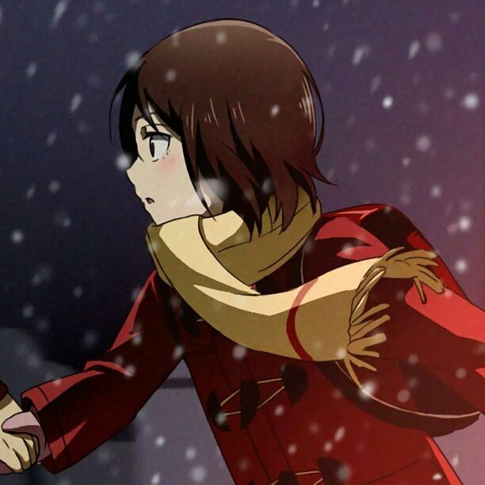

Critério de recomendação
Essa lista contém 5 animes que eu, Kethleyn, assisti e recomendo muito, principalmente
para quem está querendo embarcar no mundo dos animes.
Pensando nos iniciantes, eu irei dar preferência para animes disponíveis na Netflix, já que a maioria
das pessoas tem acesso.
Então, é isso. Vamos lá?
Parasyte
Izumi Shinichi tem 17 anos e é um estudante que na mora em Tóquio. Um dia, um parasita consegue
tomar sua mão direita. E, apesar da rixa no início, eles acabam se entendendo e se usam para se defenderem
dos demais parasitas no mundo.
O enredo é bem interessante e te prende muito. Além disso, para a época de lançamento, a animação é bem feita.
Your lie in April


A série conta a história de um pianista prodígio que, ao perder sua mãe, perde totalmente
a vontade de tocar e tem que lidar com um terrível colapso mental. Mas, isso passa a ser diferente depois que ele conhece
uma violinista.
O enredo é muito bonito e apesar de muito triste, a história me ensinou muitas coisas e acredito que
vá te ensinar também.
Erased

O anime foca em Satoru Fujinuma, um jovem possui uma habilidade conhecida como "Revivescência".
Essa habilidade o envia de volta no tempo momentos antes de um incidente com risco de vida, permitindo-lhe evitar que aconteça novamente.
Quando sua mãe é assassinada em sua própria casa, a habilidade de Satoru o leva de volta 18 anos no passado.
O anime é muito interessante e a história é muito linda. A animação é bem feita e eu recomendo demaaaaais!
The promised neverland

A história foca em 3 crianças que moram em um orfanato: Emma, Norman e Ray, principalmente na Emma. De acordo com as
regras deste orfanato, as crianças eram proibidas de saírem e atravessarem uma floresta que cercava o portão principal. Apenas
as crianças que haviam sido adotadas podiam sair. Mas, por acaso Emma descobre que as crianças não eram adotas, mas sim viravam
comida para um monstro misterioso.
O anime é muito bom e ele realmente te prende para que voce assista até o fim. A animação é muito bem feita também. Eu recomendo muito, afinal é um dos meus animes
preferidos! :)
Your name


Uma menina e um menino, que vivem bem distantes um do outro e nem se conhecem, acabam
trocando de corpos todas as vezes que eles sonham e o que causa isso é um verdadeiro
mistério. Porém, acontece um acidente e o garoto percebe o quão apaixonado ele está por ela.
Esse é com certeza o meu top 1 em animação e enredo. Meu filme de anime preferido! Recomendo demais!